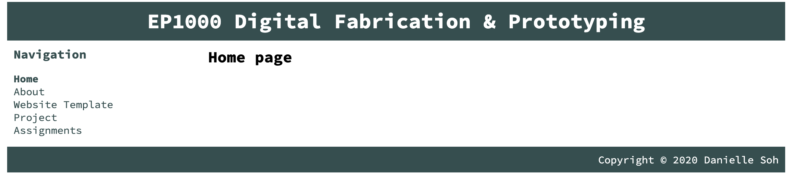
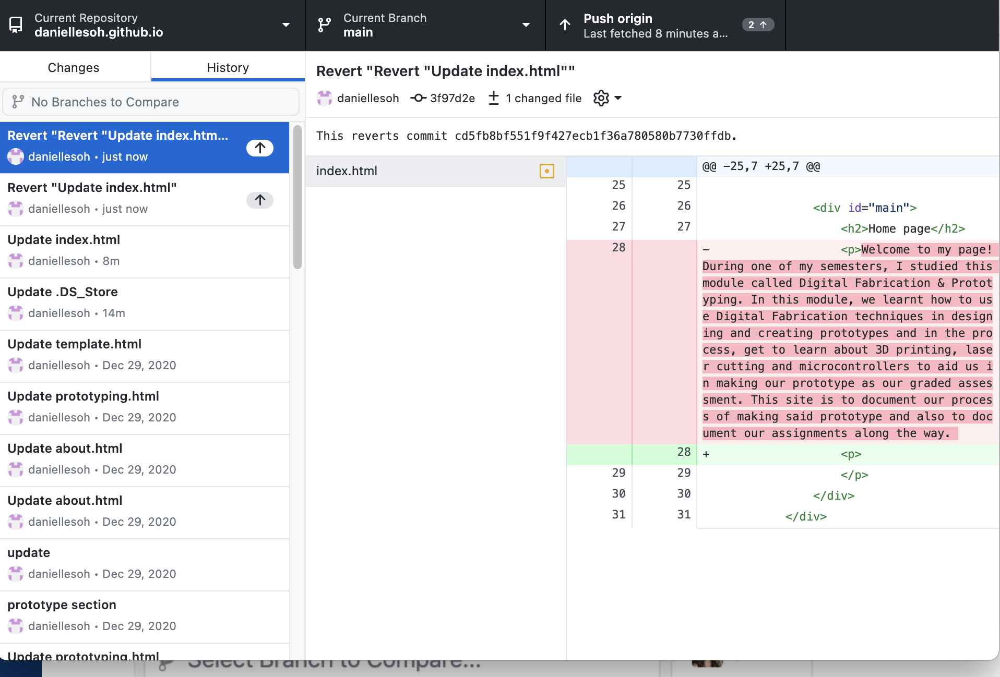
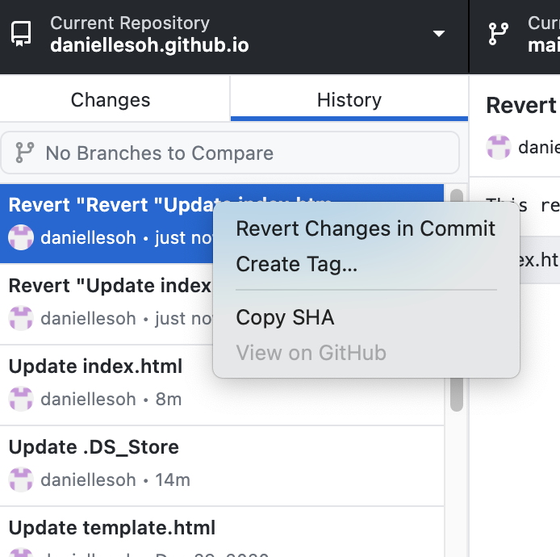

Version Control
After making the website, we were tasked to document how to retract/extract lost data using git.
Process
When you accidentally delete a paragraph of text or want to “undo” whatever mistake you did but have already pushed it to the repository, you can follow these steps:
|   |
|